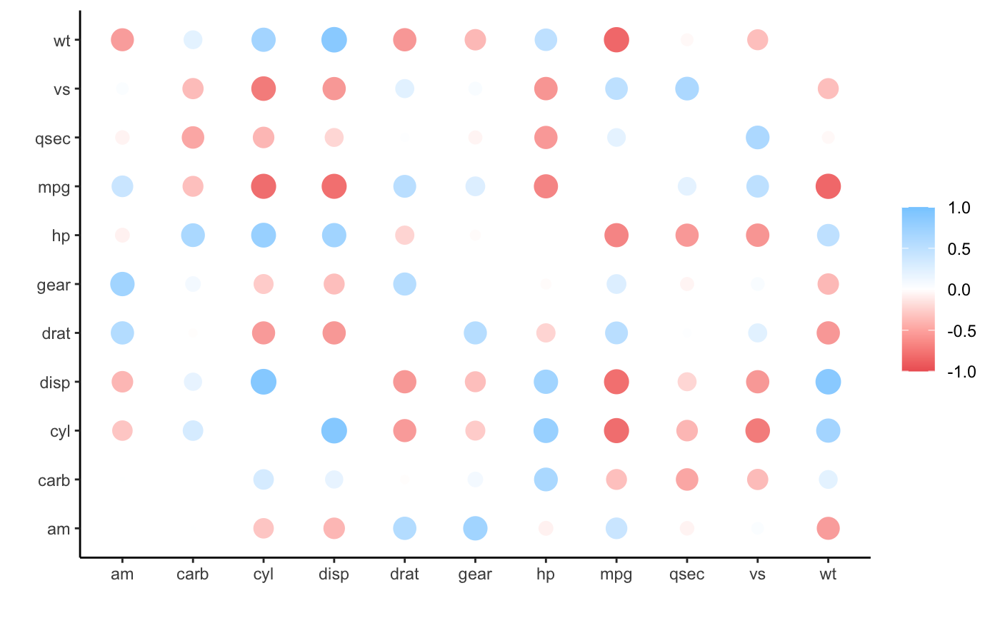
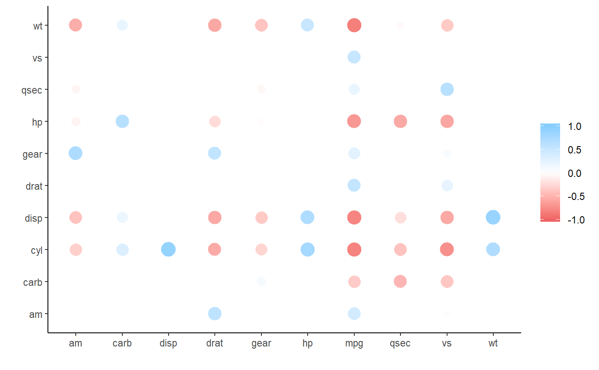
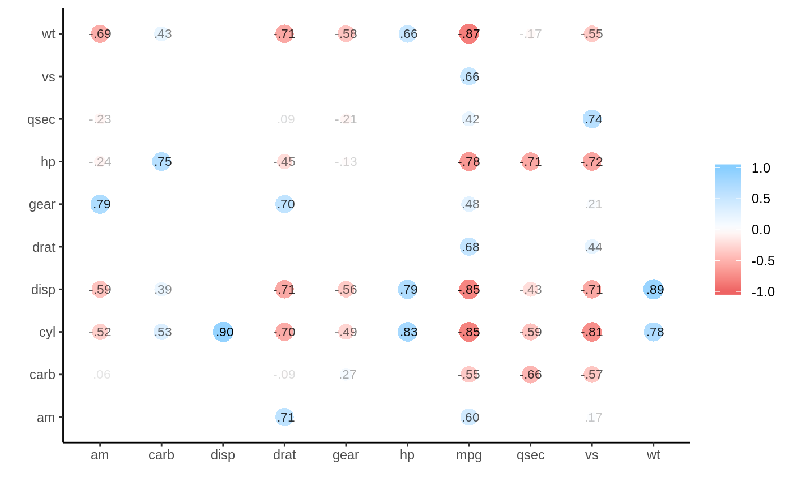
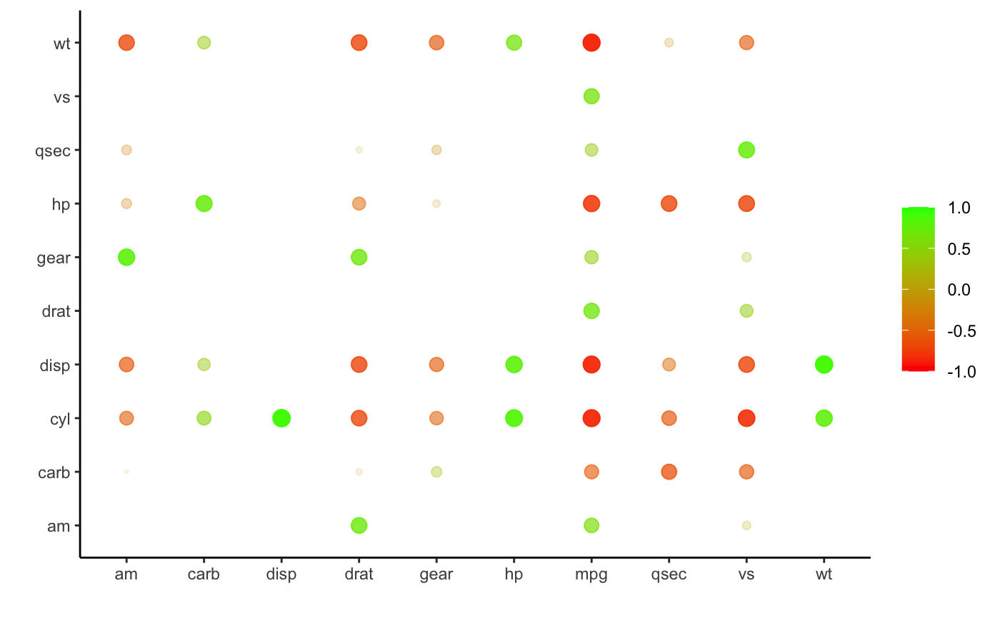

Plot a correlation data frame using ggplot2.
rplot(rdf, legend = TRUE, shape = 16, colours = c("indianred2", "white", "skyblue1"), print_cor = FALSE, colors)
| rdf | Correlation data frame (see |
|---|---|
| legend | Boolean indicating whether a legend mapping the colours to the correlations should be displayed. |
| shape |
|
| colours, colors | Vector of colours to use for n-colour gradient. |
| print_cor | Boolean indicating whether the correlations should be printed over the shapes. |
Plots a correlation data frame
#> #> #>rplot(x)#># Common use is following rearrange and shave x <- rearrange(x, absolute = FALSE) x <- shave(x) rplot(x)#>rplot(x, print_cor = TRUE)#>#>#>